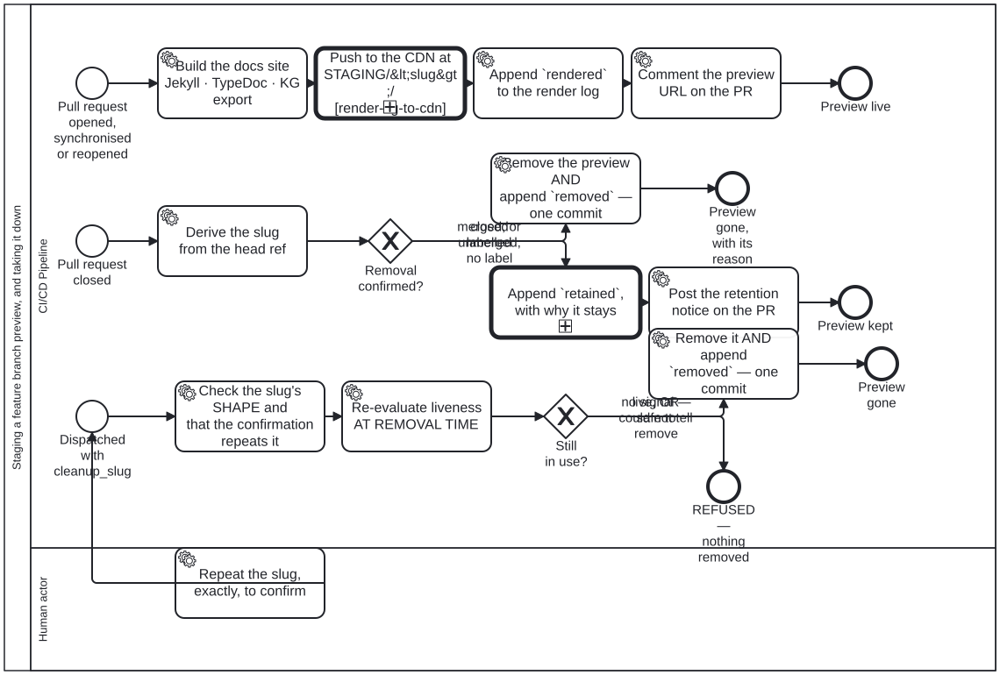

Generated from
cat-harness/processes/sdlc/feature-staging.bpmnbygen-processes-viz.ts— do not edit here. All processes
Staging a feature branch preview, and taking it down
Process_FeatureStaging · strict · 12 step(s)
The lifecycle of a feature branch’s review preview: staged on a push, taken down when its pull request closes, or removed by an explicit dispatch. THE LIFECYCLE OF A REVIEW PREVIEW, drawn rather than described. Bean 7yvd, owner: “make sure all workflows documented as bpmn”. This is the first .github/workflows/*.yml documented here, and it was chosen because its shape was the least visible: three jobs, eight if: branches, a confirmation gate and a deletion trigger, written down only in a sixty-line YAML comment.
Three entry points, and they are three different processes sharing a file. A pull request opened or pushed to STAGES a preview. A pull request CLOSED asks whether the preview should go. A dispatch removes ONE preview that the first two can no longer reach — bean w2g5: the health sweep can only ever report a preview whose pull request is already closed, so by the time anybody reads the finding the event has fired, the job has run and the label was absent. Labelling afterwards fires nothing.
TWO GATEWAYS, and both are three-state rather than yes/no. Removal confirmed? reads a merge as confirmation in its own right (bean 1feu) while still requiring a label for a close without a merge. Still in use? refuses on a live signal AND on could-not-tell, because a preflight that has gone blind must not read as permission.
EVERY PATH THAT CHANGES STAGING/ WRITES TO THE RENDER LOG, and the two removal paths write the record in the SAME COMMIT as the removal. A separate log push can fail alone and leave a preview that vanished with nothing saying why, which is the state bean plj1 left the publish branch in for months.
The single human step is the dispatch confirmation. Everything else is mechanical, which is what makes build-pipeline the right lane rather than a convenient one.

How it connects
- Called by: no call activity names this process
- Calls: Render a Knowledge Graph to a CDN
- Names the
feature-stagingskill without calling this process: CRDM Phase 6 — implement, MVP, acceptance, Publishing the docs site, and keeping the previews alive, Adopting an upstream version bump, Questionnaire wireframe review, Content Change and Review, L2 component edit and review, SMART Guideline end to end —activity-calls-skill-processasks whether each should be a call activity. - Presented on: no docs page section shows this diagram
- Skill:
feature-staging
Lanes — who acts
| lane | role | what it does here |
|---|---|---|
| CI/CD Pipeline | build-pipeline | Runs all three entry points — stage, cleanup, cleanup-dispatch — as one actor because none of the work in any of them needs judgement; the one step that does, confirming a dispatch deletion, was carved out into Lane_Human rather than left here. Every path that changes STAGING/ writes its render-log entry in the SAME commit as the change, because a log push that can fail on its own is exactly how a preview vanishes with nothing on the branch saying why.A FOURTH trigger starts none of them, and that is deliberate rather than an omission from this diagram. merge_group is declared on the workflow so it REPORTS in the merge queue — a required check that never reports on a merge_group event leaves every queued pull request pending forever — and all three jobs skip on it. A preview exists for the reviewers of a pull request; a queue entry has none and lives for minutes. Without the skip, stage’s existing guards all pass on a queue run (github.event.action is empty and the event is not a dispatch), so it would publish STAGING/<slug>/ named after the ephemeral gh-readonly-queue/... ref, and nothing would ever remove it — Start_Closed below fires on pull_request_target: closed, and a queue branch is never a pull request that closes. That is the plj1 shape arriving once per MERGE rather than once per pull request. |
| Human actor | user | The only lane whose actor cannot be a machine — deletion-requires-confirmation is not satisfied by a click, so H_Confirm must repeat the slug rather than approve generically, which is what stops a confirmation from an earlier run being replayed against a different preview. It precedes Start_Dispatch rather than following it, so the dispatch entry point cannot fire at all until this lane has acted. |
Steps
Every one of the 12 step(s) is documented.
| step | lane | skill / sub-process | what it does |
|---|---|---|---|
Build the docs site Jekyll · TypeDoc · KG exportTask_Build | CI/CD Pipeline | feature-staging | Build the preview from the PR’s head: regenerate the generated docs, trim what this preview does not need, render the BPMN diagrams, then Jekyll, TypeDoc and the knowledge-graph export, with the staging banner and SEO identity claims stripped. |
Push to the CDN at STAGING/<slug>/Task_Deploy | CI/CD Pipeline | calls Render a Knowledge Graph to a CDNrender-kg-to-cdn | A PREVIEW IS THE GENERAL STEP WITH A DIFFERENT ROOT (owner, 2026-09-30: “independent of staging vs publication … just rendering”). Process_RenderKgToCdn, entered with the tree Task_Build rendered, STAGING/<slug>/ under the site root as the publication root URL, and GitHub Pages as the target, so its gh-pages Tool pushes. For this target the push is keep_files: true with a destination_dir, so it adds one directory beside whatever else is on the branch; it is also RETRIED once: five other workflows push to gh-pages without joining this one’s concurrency group, and a queue does not help because GitHub CANCELS a pending job when a newer one arrives for the same group rather than queueing it. Measured 2026-09-19: three staging runs from three different branches inside 17 seconds, two cancelled. The call returns the push’s status and message; the render log and the PR comment that follow are this process’s own. THE PREVIEW CAP rides in the same commit (owner ruling 2026-10-02, issue #1868: “cap the maximum number of previews (<= 10) and rotate old ones off”, amended 2026-10-04 to a SIZE budget: “Cap by size, not count”, “3gb”): staging-rotate.ts keeps this preview plus the most recently updated others while their total fits MAX_PREVIEW_BYTES = 3 GB and removes the rest, oldest first, each with a removed render-log entry and its record retired into STAGING/_retired/. Every push attempt re-reads gh-pages and re-decides rather than rebasing, so a lost race never pushes a stale removal. A rotated-off preview is regenerated by the next push to its PR branch. |
Append rendered to the render logTask_LogRendered | CI/CD Pipeline | render-logging | Its OWN commit, not part of the deploy. The publish action writes only into destination_dir, so an entry riding in _site would land at STAGING/<slug>/_render-log/ — inside the directory a cleanup removes, which is the one place a record of the removal must not be. continue-on-error: a preview that deployed and whose entry did not is a gap in the record, not a failed deploy. |
Comment the preview URL on the PRTask_Comment | CI/CD Pipeline | staging-review | Post, or update in place, one comment on the PR giving the preview URL (STAGING/ |
Derive the slug from the head refTask_Slug | CI/CD Pipeline | feature-staging | Derive the slug from the PR’s head ref: every character outside [a-zA-Z0-9._-] becomes ‘-‘, runs of ‘-‘ collapse, and leading or trailing ‘-‘ is trimmed. It must be one safe path segment, checked by value. |
Remove the preview AND append removed — one commitTask_Remove | CI/CD Pipeline | deletion-requires-confirmation | ONE COMMIT for the removal and its record. A separate log push can fail on its own and leave a preview that vanished with nothing saying why — which is the exact state bean plj1 left the branch in. render-log.ts refuses a removed entry with no reason, so this step fails loudly rather than writing a record that says an artefact went and not why. |
Append retained, with why it staysTask_LogRetained | CI/CD Pipeline | render-logging | The event that makes the log worth reading. A removal was CONSIDERED and refused; without an entry that leaves no trace on the branch at all, and the next person asking “why is this preview still up” has only a comment on a pull request that may itself be closed. |
Post the retention notice on the PRTask_Notice | CI/CD Pipeline | staging-review | Removal was not confirmed, so the preview stays: post a retention notice on the PR giving its URL and saying it has NOT been removed, and the two ways to remove it: the staging:cleanup label while the PR is open, or, once it is closed, a Run workflow dispatch with cleanup_slug and a matching cleanup_confirm. |
Check the slug’s SHAPE and that the confirmation repeats itTask_Validate | CI/CD Pipeline | deletion-requires-confirmation | Guarded three ways because a dispatch input is a DELETION TRIGGER. workflow_dispatch is available only to an actor with write access; the slug must match exactly the characters the sed pipeline can produce, with . and .. refused by name; and the confirmation must repeat the slug, so a confirmation cannot be carried over from an earlier run against a different preview. |
Re-evaluate liveness AT REMOVAL TIMETask_Preflight | CI/CD Pipeline | deletion-requires-confirmation | Re-evaluated AT REMOVAL TIME, through the same previewLiveness the health sweep uses rather than a second implementation of it. The sweep runs daily and proposes; this acts. Between them a branch can come back to life — bean w2g5 documents exactly that, a session reusing one branch across five successive pull requests. |
Remove it AND append removed — one commitTask_RemoveDisp | CI/CD Pipeline | deletion-requires-confirmation | Say what is going — size and file count — then remove STAGING/ |
Repeat the slug, exactly, to confirmH_Confirm | Human actor | deletion-requires-confirmation | The one step in this process that is a person’s. Repeating the slug is not ceremony: it names the artefact being confirmed, so a confirmation cannot be inherited by a later run pointed at a different preview. |
Decisions
Every one of the 2 decision(s) is documented.
| decision | what decides it | branches |
|---|---|---|
Removal confirmed?GW_Confirmed | THREE inputs, two outcomes, and bean 1feu set the split: a MERGED pull request needs no label, because the merge IS the confirmation — a person decided the content belongs on main, which says more about the preview than a label does. A pull request closed WITHOUT merging still needs staging:cleanup, because there the preview is the only rendering of that work: not redundant, the last copy.The branch taken is emitted as reason=merged \| labelled \| closed-unmerged-and-unlabelled and written into the log entry, so an audit of a removal can tell which rule did it. | merged, or labelled → Remove the preview AND append removed — one commitclosed unmerged, no label → Append retained, with why it stays |
Still in use?GW_Live | THREE states, and the third is why this gateway exists. Still in use → refuse, exit 1. COULD NOT TELL → refuse, exit 2. Only a determined absence of every liveness signal removes anything. Refusing to delete is the only recoverable direction, and a preflight that has gone blind must not read as permission. | no signal — safe to remove → Remove it AND append removed — one commitlive, OR could not tell → REFUSED — nothing removed |